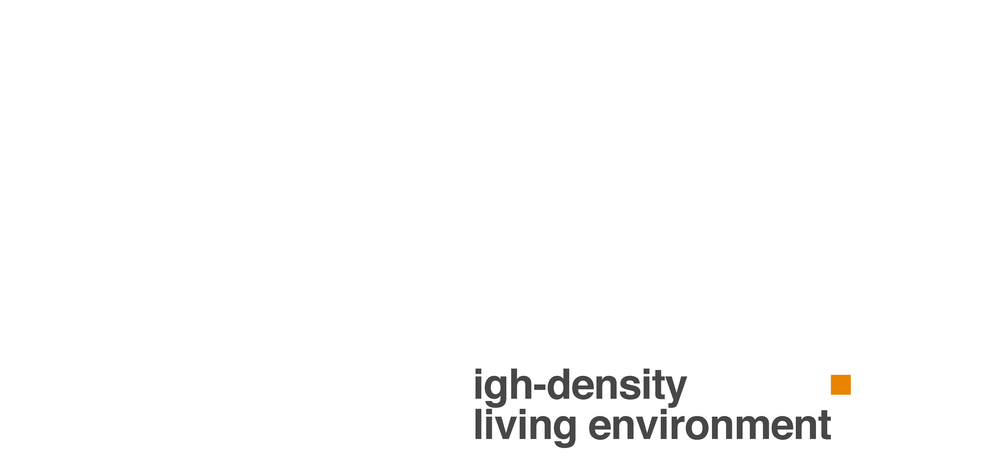
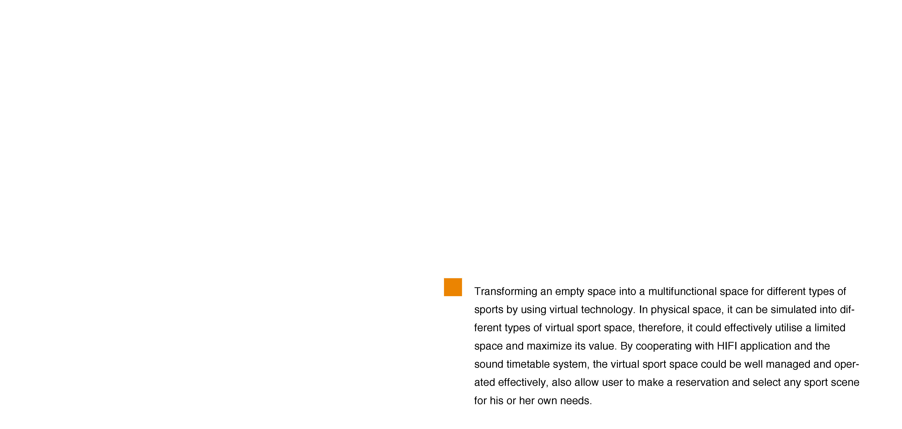
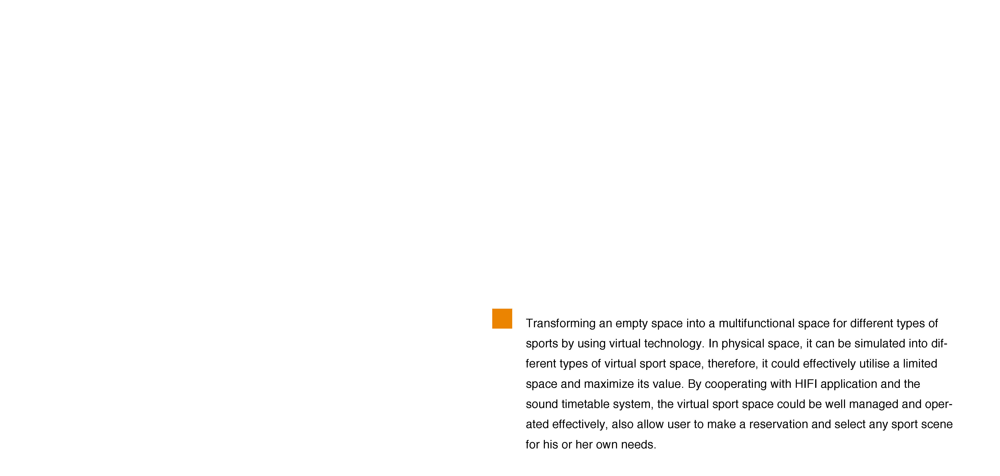
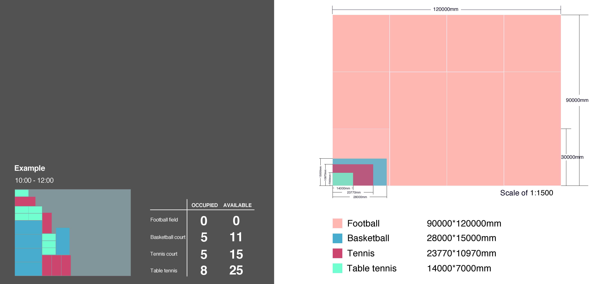
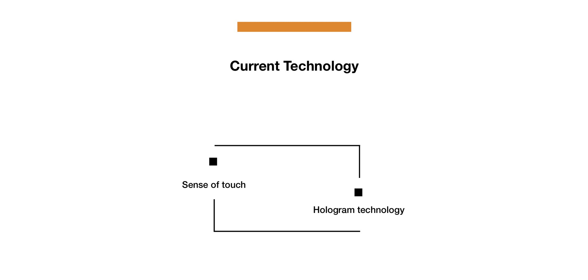
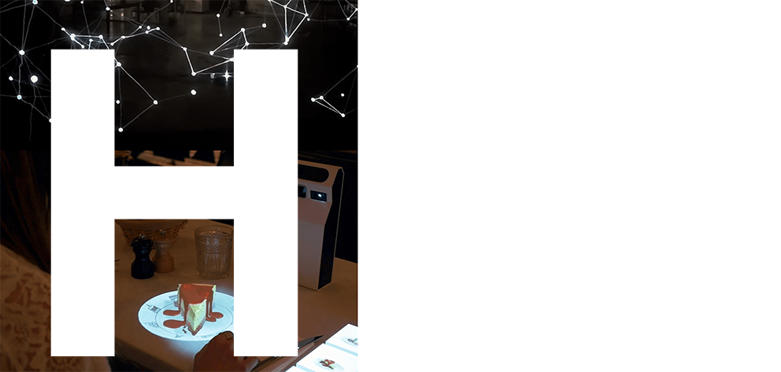
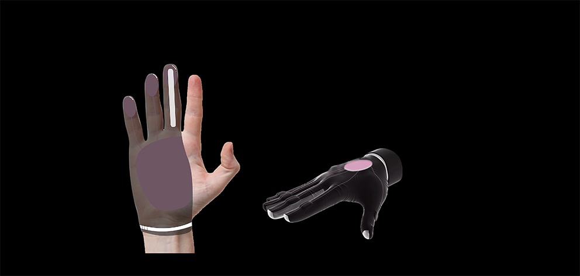
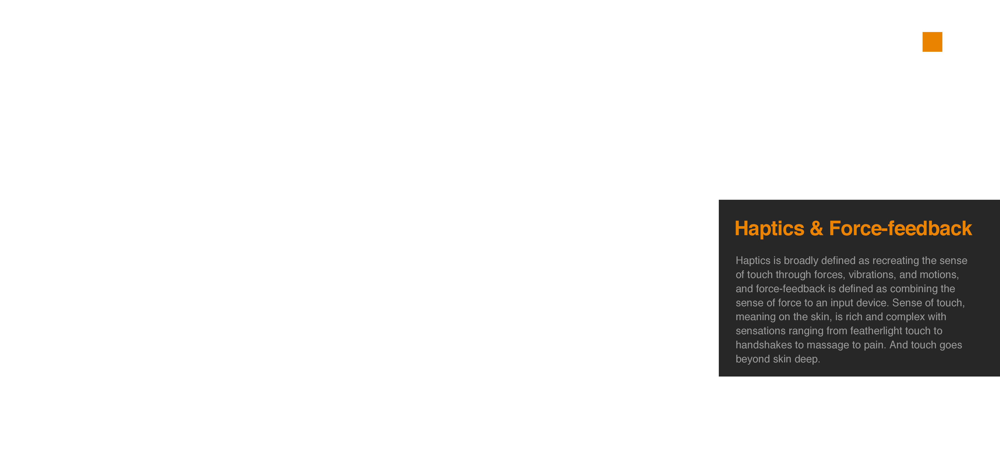
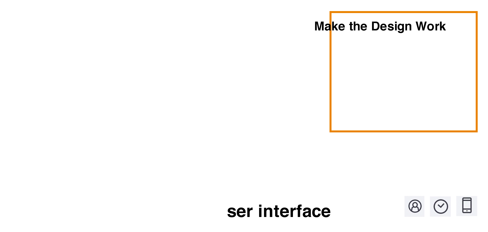
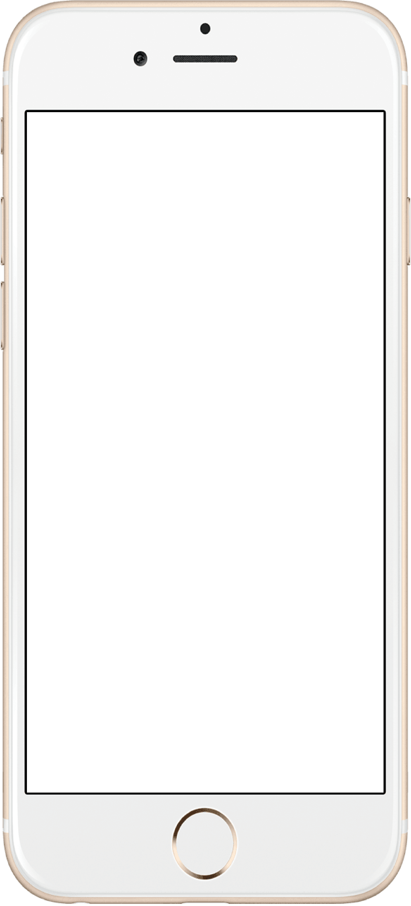

As the growth of world population, the large needed of public spaces has become an issue
According to BBC, we have already used up the most productive land, rivers and water. Sooner we will run out of actual space to live. Around half of the world’s land currently holds around 2% of the planet’s population, whereas only about 3% of total land supports more than half of humanity. Human have kept developing more spaces in order to provides more functions. However, it is hard to avoid unnecessary waste for space usage. In our project we are focusing on the aspect of sport space, it is not difficult to spot that there are many sport fields are not used often. Therefore, if we can effectively manage all those physical spaces to maximize its value then would certainly improve the environmental issue.

Target Audience
People who live in high-density residential areas
Augmented Point
Because the entire sport scene and related sport equipments are created as virtual forms, supplier of sporting goods are no longer needed, also can save more resources waste for the environment.

 

Space Management
Timetable system Space management
Ideally, the size of football field would be taken for our virtual sport space since considering it is the largest space among all the sports, so could be divided it into different kinds of sports. The booking system would set specific period of time for a day, such as, 7am to 10am, 10am to 12pm, 12pm to 14pm and so on, in order to avoid complex situation. The timetable system would ensure all the activities would be able to be played equally, and be modified based on the frequency of users’ need.
The following image shows an example that some of the space have been taken for certain sports and the system would automatically calculate the number of available sports can be chosen for the rest of the space from 10:00 to 12:00 on a certain day


“A hologram is a 3D virtual object that isn’t actually there, but looks as if it were, either floating in the air or standing on a nearby desk or table”
No-logram
This new technique, developed by a French artist named Joanie Lemercier, uses two dimensional projections paired with a motion sensor to make the image appear to be fully 3D and it works without glasses.
HoloLamp
It’s the world’s first glasses-free and hands-free portable holographic device that creates optical 3D illusions directly on your environment. It is based on advanced projection technology, computer vision and machine learning



AvatarVR
With the pitch “Feel & Touch VR”, Avatar VR is our newest wireless controller creation for Virtual Reality. As Gloveone was before, it has been designed to provide a realistic sense of touch thanks to the use of haptic technology.
Go Touch VR
An innovation design company delivering touch solutions for VR and AR. We provide our haptic technology, support and services for both academic organizations and companies active in the fields of training, engineering, showcasing and data interaction.
Sense Glove
The sense glove can be used as force-feedback controller for virtual and augmented reality or as input device for tele- robotics. It resembles a large, skeletal hand into which the users slides their own, while also fastening attachments to their fingers.




